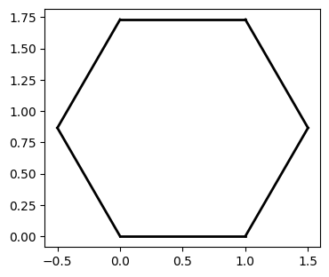

Workshop 2 Answers
Workshop 2 Answers#
import matplotlib.pyplot as plt
import numpy as np
# Function definitions
def draw_triangle():
for i in range(3):
draw_forward(1)
rotate_left(120)
def draw_square():
for i in range(4):
draw_forward(1)
rotate_left(90)
def draw_pentagon():
for i in range(5):
draw_forward(1)
rotate_left(72)
def draw_hexagon():
for i in range(6):
draw_forward(1)
rotate_left(60)
def draw_heptagon():
for i in range(7):
draw_forward(1)
rotate_left(360/7)
def start():
state[0] = 0
state[1] = 0
state[2] = 0
fig = plt.figure(figsize=(4,4))
ax = fig.add_subplot(111)
ax.set_aspect('equal', adjustable='box')
return fig
def draw_forward(dis):
x = state[0]
y = state[1]
angle = state[2]
state[0] = x + np.cos(angle) * dis
state[1] = y + np.sin(angle) * dis
plt.plot([x, state[0]], [y, state[1]], color="black", linewidth=2)
def move_forward(dis):
x = state[0]
y = state[1]
angle = state[2]
state[0] = x + np.cos(angle) * dis
state[1] = y + np.sin(angle) * dis
def rotate_left(theta):
state[2] = state[2] + theta * np.pi / 180
state = [0, 0, 0]
# Example: draw a unit square
start()
draw_forward(1)
rotate_left(90)
draw_forward(1)
rotate_left(90)
draw_forward(1)
rotate_left(90)
draw_forward(1)

# Example: draw a hexagon
start()
draw_forward(1)
rotate_left(60)
draw_forward(1)
rotate_left(60)
draw_forward(1)
rotate_left(60)
draw_forward(1)
rotate_left(60)
draw_forward(1)
rotate_left(60)
draw_forward(1)

start()
for i in range(6):
draw_forward(1)
rotate_left(60)

f = start()
draw_triangle()
move_forward(2)
draw_square()
move_forward(2)
draw_pentagon()
move_forward(2)
draw_hexagon()
move_forward(2)
draw_heptagon()

f = start()
for i in range(5):
draw_square()
rotate_left(72)
n = 100
m = 10
theta = 360 / n
f = start()
for j in range (m):
for i in range(n):
draw_forward(2/n)
rotate_left(theta)
move_forward(1)
rotate_left(360/m)